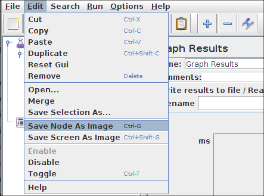

|
About
Download
Documentation
Tutorials (PDF format)
Community
Foundation
|
|
14. Introduction to listeners¶
|
A listener is a component that shows the results of the
samples. The results can be shown in a tree, tables, graphs or simply written to a log
file. To view the contents of a response from any given sampler, add either of the Listeners "View
Results Tree" or "View Results in table" to a test plan. To view the response time graphically, add
graph results, spline results or distribution graph.
The
listeners
section of the components page has full descriptions of all the listeners.
|
Different listeners display the response information in different ways.
However, they all write the same raw data to the output file - if one is specified.
|
The "Configure" button can be used to specify which fields to write to the file, and whether to
write it as CSV or XML.
CSV files are much smaller than XML files, so use CSV if you are generating lots of samples.
The file name can be specified using either a relative or an absolute path name.
Relative paths are resolved relative to the current working directory (which defaults to the bin/ directory).
Versions of JMeter after 2.4 also support paths relative to the directory containing the current test plan (JMX file).
If the path name begins with "~/" (or whatever is in the jmeter.save.saveservice.base_prefix JMeter property),
then the path is assumed to be relative to the JMX file location.
If you only wish to record certain samples, add the Listener as a child of the sampler.
Or you can use a Simple Controller to group a set of samplers, and add the Listener to that.
The same filename can be used by multiple samplers - but make sure they all use the same configuration!
|
|
|
14.1 Default Configuration¶
|
The default items to be saved can be defined in the jmeter.properties (or user.properties) file.
The properties are used as the initial settings for the Listener Config pop-up, and are also
used for the log file specified by the -l command-line flag (commonly used for non-GUI test runs).
To change the default format, find the following line in jmeter.properties:
jmeter.save.saveservice.output_format=
The information to be saved is configurable. For maximum information, choose "xml" as the format and specify "Functional Test Mode" on the Test Plan element. If this box is not checked, the default saved
data includes a time stamp (the number of milliseconds since midnight,
January 1, 1970 UTC), the data type, the thread name, the label, the
response time, message, and code, and a success indicator. If checked, all information, including the full response data will be logged.
The following example indicates how to set
properties to get a vertical bar ("|") delimited format that will
output results like:.
timeStamp|time|label|responseCode|threadName|dataType|success|failureMessage
02/06/03 08:21:42|1187|Home|200|Thread Group-1|text|true|
02/06/03 08:21:42|47|Login|200|Thread Group-1|text|false|Test Failed:
expected to contain: password etc.
The corresponding jmeter.properties that need to be set are shown below. One oddity
in this example is that the output_format is set to csv, which
typically
indicates comma-separated values. However, the default_delimiter was
set to be a vertical bar instead of a comma, so the csv tag is a
misnomer in this case. (Think of CSV as meaning character separated values)
jmeter.save.saveservice.output_format=csv
jmeter.save.saveservice.assertion_results_failure_message=true
jmeter.save.saveservice.default_delimiter=|
The full set of properties that affect result file output is shown below.
#---------------------------------------------------------------------------
# Results file configuration
#---------------------------------------------------------------------------
# This section helps determine how result data will be saved.
# The commented out values are the defaults.
# legitimate values: xml, csv, db. Only xml and csv are currently supported.
#jmeter.save.saveservice.output_format=xml
# true when field should be saved; false otherwise
# assertion_results_failure_message only affects CSV output
#jmeter.save.saveservice.assertion_results_failure_message=false
#
#jmeter.save.saveservice.data_type=true
#jmeter.save.saveservice.label=true
#jmeter.save.saveservice.response_code=true
# response_data is not currently supported for CSV output
#jmeter.save.saveservice.response_data=false
# Save ResponseData for failed samples
#jmeter.save.saveservice.response_data.on_error=false
#jmeter.save.saveservice.response_message=true
#jmeter.save.saveservice.successful=true
#jmeter.save.saveservice.thread_name=true
#jmeter.save.saveservice.time=true
#jmeter.save.saveservice.subresults=true
#jmeter.save.saveservice.assertions=true
#jmeter.save.saveservice.latency=true
#jmeter.save.saveservice.samplerData=false
#jmeter.save.saveservice.responseHeaders=false
#jmeter.save.saveservice.requestHeaders=false
#jmeter.save.saveservice.encoding=false
#jmeter.save.saveservice.bytes=true
#jmeter.save.saveservice.url=false
#jmeter.save.saveservice.filename=false
#jmeter.save.saveservice.hostname=false
#jmeter.save.saveservice.thread_counts=false
#jmeter.save.saveservice.sample_count=false
#jmeter.save.saveservice.idle_time=false
# Timestamp format
# legitimate values: none, ms, or a format suitable for SimpleDateFormat
#jmeter.save.saveservice.timestamp_format=ms
#jmeter.save.saveservice.timestamp_format=MM/dd/yy HH:mm:ss
# Put the start time stamp in logs instead of the end
sampleresult.timestamp.start=true
# legitimate values: none, first, all
#jmeter.save.saveservice.assertion_results=none
# For use with Comma-separated value (CSV) files or other formats
# where the fields' values are separated by specified delimiters.
# Default:
#jmeter.save.saveservice.default_delimiter=,
# For TAB, since JMeter 2.3 one can use:
#jmeter.save.saveservice.default_delimiter=\t
#jmeter.save.saveservice.print_field_names=false
# Optional list of JMeter variable names whose values are to be saved in the result data files.
# Use commas to separate the names. For example:
#sample_variables=SESSION_ID,REFERENCE
# N.B. The current implementation saves the values in XML as attributes,
# so the names must be valid XML names.
# Versions of JMeter after 2.3.2 send the variable to all servers
# to ensure that the correct data is available at the client.
# Optional xml processing instruction for line 2 of the file:
#jmeter.save.saveservice.xml_pi=<?xml-stylesheet type="text/xsl" href="sample.xsl"?>
# Prefix used to identify filenames that are relative to the current base
#jmeter.save.saveservice.base_prefix=~/
The date format to be used for the timestamp_format is described in
SimpleDateFormat
.
Bear in mind that choosing a date format other than "ms" is likely to
make it impossible for JMeter to interpret the value when it is read
in later for viewing purposes.
|
14.1.1 Sample Variables
¶
|
Versions of JMeter after 2.3.1 allow one to use the
sample_variables
property to define a list of additional JMeter variables which are to be saved with
each sample in the JTL files. The values are written to CSV files as additional columns,
and as additional attributes in XML files. See above for an example.
|
|
|
14.1.2 Sample Result Save Configuration
¶
|
Listeners can be configured to save different items to the result log files (JTL) by using the Config popup as shown below.
The defaults are defined as described in the
Listener Default Configuration
section above.
Items with (CSV) after the name only apply to the CSV format; items with (XML) only apply to XML format.
CSV format cannot currently be used to save any items that include line-breaks.

Configuration dialogue
|
|
|
Note that cookies, method and the query string are saved as part of the "Sampler Data" option.
|
|
|
14.2 non-GUI (batch) test runs¶
|
When running in non-GUI mode, the -l flag can be used to create a top-level listener for the test run.
This is in addition to any Listeners defined in the test plan.
The configuration of this listener is controlled by entries in the file jmeter.properties
as described in the previous section.
This feature can be used to specify different data and log files for each test run, for example:
jmeter -n -t testplan.jmx -l testplan_01.jtl -j testplan_01.log
jmeter -n -t testplan.jmx -l testplan_02.jtl -j testplan_02.log
Note that JMeter logging messages are written to the file
jmeter.log
by default.
This file is recreated each time, so if you want to keep the log files for each run,
you will need to rename it using the -j option as above. The -j option was added in version 2.3.
Versions of JMeter after 2.3.1 support variables in the log file name.
If the filename contains paired single-quotes, then the name is processed
as a SimpleDateFormat format applied to the current date, for example:
log_file='jmeter_'yyyyMMddHHmmss'.tmp'
.
This can be used to generate a unique name for each test run.
|
|
|
14.3 Resource usage¶
|
Listeners can use a lot of memory if there are a lot of samples.
Most of the listeners currently keep a copy of every sample they display, apart from:
-
Simple Data Writer
-
BeanShell/BSF Listener
-
Mailer Visualizer
-
Monitor Results
-
Summary Report
The following Listeners no longer need to keep copies of every single sample.
Instead, samples with the same elapsed time are aggregated.
Less memory is now needed, especially if most samples only take a second or two at most.
-
Aggregate Report
-
Aggregate Graph
-
Distribution Graph
To minimise the amount of memory needed, use the Simple Data Writer, and use the CSV format.
|
|
|
14.4 CSV Log format¶
|
The CSV log format depends on which data items are selected in the configuration.
Only the specified data items are recorded in the file.
The order of appearance of columns is fixed, and is as follows:
-
timeStamp - in milliseconds since 1/1/1970
-
elapsed - in milliseconds
-
label - sampler label
-
responseCode - e.g. 200, 404
-
responseMessage - e.g. OK
-
threadName
-
dataType - e.g. text
-
success - true or false
-
failureMessage - if any
-
bytes - number of bytes in the sample
-
grpThreads - number of active threads in this thread group
-
allThreads - total number of active threads in all groups
-
URL
-
Filename - if Save Response to File was used
-
latency - time to first response
-
encoding
-
SampleCount - number of samples (1, unless multiple samples are aggregated)
-
ErrorCount - number of errors (0 or 1, unless multiple samples are aggregated)
-
Hostname where the sample was generated
-
IdleTime - number of milliseconds of 'Idle' time (normally 0)
-
Variables, if specified
|
|
|
14.5 XML Log format 2.1¶
|
The format of the updated XML (2.1) is as follows (line breaks will be different):
<?xml version="1.0" encoding="UTF-8"?>
<testResults version="1.2">
-- HTTP Sample, with nested samples
<httpSample t="1392" lt="351" ts="1144371014619" s="true"
lb="HTTP Request" rc="200" rm="OK"
tn="Listen 1-1" dt="text" de="iso-8859-1" by="12407">
<httpSample t="170" lt="170" ts="1144371015471" s="true"
lb="http://www.apache.org/style/style.css" rc="200" rm="OK"
tn="Listen 1-1" dt="text" de="ISO-8859-1" by="1002">
<responseHeader class="java.lang.String">HTTP/1.1 200 OK
Date: Fri, 07 Apr 2006 00:50:14 GMT
...
Content-Type: text/css
</responseHeader>
<requestHeader class="java.lang.String">MyHeader: MyValue</requestHeader>
<responseData class="java.lang.String">body, td, th {
font-size: 95%;
font-family: Arial, Geneva, Helvetica, sans-serif;
color: black;
background-color: white;
}
...
</responseData>
<cookies class="java.lang.String"></cookies>
<method class="java.lang.String">GET</method>
<queryString class="java.lang.String"></queryString>
<url>http://www.apache.org/style/style.css</url>
</httpSample>
<httpSample t="200" lt="180" ts="1144371015641" s="true"
lb="http://www.apache.org/images/asf_logo_wide.gif"
rc="200" rm="OK" tn="Listen 1-1" dt="bin" de="ISO-8859-1" by="5866">
<responseHeader class="java.lang.String">HTTP/1.1 200 OK
Date: Fri, 07 Apr 2006 00:50:14 GMT
...
Content-Type: image/gif
</responseHeader>
<requestHeader class="java.lang.String">MyHeader: MyValue</requestHeader>
<responseData class="java.lang.String">http://www.apache.org/asf.gif</responseData>
<responseFile class="java.lang.String">Mixed1.html</responseFile>
<cookies class="java.lang.String"></cookies>
<method class="java.lang.String">GET</method>
<queryString class="java.lang.String"></queryString>
<url>http://www.apache.org/asf.gif</url>
</httpSample>
<responseHeader class="java.lang.String">HTTP/1.1 200 OK
Date: Fri, 07 Apr 2006 00:50:13 GMT
...
Content-Type: text/html; charset=ISO-8859-1
</responseHeader>
<requestHeader class="java.lang.String">MyHeader: MyValue</requestHeader>
<responseData class="java.lang.String">
...
<html>
<head>
...
</head>
<body>
...
</body>
</html>
</responseData>
<cookies class="java.lang.String"></cookies>
<method class="java.lang.String">GET</method>
<queryString class="java.lang.String"></queryString>
<url>http://www.apache.org/</url>
</httpSample>
-- nonHTTPP Sample
<sample t="0" lt="0" ts="1144372616082" s="true" lb="Example Sampler"
rc="200" rm="OK" tn="Listen 1-1" dt="text" de="ISO-8859-1" by="10">
<responseHeader class="java.lang.String"></responseHeader>
<requestHeader class="java.lang.String"></requestHeader>
<responseData class="java.lang.String">Listen 1-1</responseData>
<responseFile class="java.lang.String">Mixed2.unknown</responseFile>
<samplerData class="java.lang.String">ssssss</samplerData>
</sample>
</testResults>
Note that the sample node name may be either "sample" or "httpSample".
|
|
|
14.7 Sample Attributes¶
|
The sample attributes have the following meaning:
|
Attribute
|
Content
|
|
by
|
Bytes
|
|
de
|
Data encoding
|
|
dt
|
Data type
|
|
ec
|
Error count (0 or 1, unless multiple samples are aggregated)
|
|
hn
|
Hostname where the sample was generated
|
|
it
|
Idle Time = time not spent sampling (milliseconds) (generally 0)
|
|
lb
|
Label
|
|
lt
|
Latency = time to initial response (milliseconds) - not all samplers support this
|
|
na
|
Number of active threads for all thread groups
|
|
ng
|
Number of active threads in this group
|
|
rc
|
Response Code (e.g. 200)
|
|
rm
|
Response Message (e.g. OK)
|
|
s
|
Success flag (true/false)
|
|
sc
|
Sample count (1, unless multiple samples are aggregated)
|
|
t
|
Elapsed time (milliseconds)
|
|
tn
|
Thread Name
|
|
ts
|
timeStamp (milliseconds since midnight Jan 1, 1970 UTC)
|
|
varname
|
Value of the named variable (versions of JMeter after 2.3.1)
|
Versions 2.1 and 2.1.1 of JMeter saved the Response Code as "rs", but read it back expecting to find "rc".
This has been corrected so that it is always saved as "rc"; either "rc" or "rs" can be read.
|
Versions of JMeter after 2.3.1 allow additional variables to be saved with the test plan.
Currently, the variables are saved as additional attributes.
The testplan variable name is used as the attribute name.
See
Sample variables
(above) for more information.
|
|
|
|
14.8 Saving response data¶
|
As shown above, the response data can be saved in the XML log file if required.
However, this can make the file rather large, and the text has to be encoded so
that it is still valid XML. Also, images cannot be included.
Another solution is to use the Post-Processor
Save_Responses_to_a_file
.
This generates a new file for each sample, and saves the file name with the sample.
The file name can then be included in the sample log output.
The data will be retrieved from the file if necessary when the sample log file is reloaded.
|
|
|
14.9 Loading (reading) response data¶
|
To view an existing results file, you can use the File "Browse..." button to select a file.
If necessary, just create a dummy testplan with the appropriate Listener in it.
Results can be read from XML or CSV format files.
When reading from CSV results files, the header (if present) is used to determine which fields were saved.
In order to interpret a header-less CSV file correctly, the appropriate JMeter properties must be set.
|
Versions of JMeter up to 2.3.2 used to clear any current data before loading the new file.
This is no longer done, thus allowing files to be merged.
If the previous behaviour is required,
use the menu item Run/Clear (Ctrl+Shift+E) or Run/Clear All (Ctrl+E) before loading the file.
|
|
|
|
14.10 Saving Listener GUI data¶
|
JMeter is capable of saving any listener as a PNG file. To do so, select the
listener in the left panel. Click edit -> Save As Image. A file dialog will
appear. Enter the desired name and save the listener.
The Listeners which generate output as tables can also be saved using Copy/Paste.
Select the desired cells in the table, and use the OS Copy short-cut (normally Control+C).
The data will be saved to the clipboard, from where it can be pasted into another application,
e.g. a spreadsheet or text editor.

Figure 1 - Edit -> Save As Image
|
|
|
|